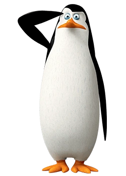

Kowalski:

Główni wrogowie:
1.Dr. Bulgot
2.Parker
3.Czerwony Wiewiór
4.Kwoka
5.Król Szczurów
6.Dave
Opis postaci:
Jest najwyższy i najszczuplejszy z grupy. Ma niebieskie oczy, wysokie czoło, szczupły dziób i okrągłą głowę. Jak każdy z pingwinów, potrafi zrobić „duże, słodkie oczy”. Często jest widywany z notatnikiem i ołówkiem oraz liczydłem, na którym wykonuje obliczenia.Kowalski jest naukowcem, toteż od okazywania uczuć czy emocji, woli chłodne kalkulacje, wzory oraz równania. Nie wierzy w magię i czary, aczkolwiek sądzi, że kosmici istnieją. Marzy o jeszcze doskonalej rozwiniętym umyśle. Nielot posiada umiejętność grania na banjo; doskonale tańczy i śpiewa. Kocha słodycze, nienawidzi za to brokułów. Boi się dentysty oraz ośmiornic. Nie lubi sytuacji, w których ktoś okazuje się lepszy od niego. Uważa, że ciamajdy mają przyjemniejsze życie. Mimo swojej naukowej natury jest też wrażliwcem, który potrafi pisać wiersze; wzrusza się najszybciej z oddziału. To sprawia, że pingwin ma wiele twarzy, od genialnego naukowca, poprzez łzawego melancholika, aż do słodkiego pingwina, którym niezaprzeczalnie jest. Kowalski jest wynalazcą, ale jego maszyny nie zawsze działają zgodnie z przeznaczeniem. Najmądrzejszy z grupy, jednak czasami niezbyt dobrze wykorzystuje swoją inteligencję. Wymyśla długie i skomplikowane nazwy dla swoich wynalazków, a niektóre z nich określa mianem „swoich dzieci”. Gdy potrzebne są bardzo szybkie decyzje, traci czas na przesadne analizowanie sytuacji. Gdy coś mu się nie udaje, uderza głową w przedmiot znajdujący się najbliżej niego. waża się za światowej klasy geniusza, choć nie potrafi czytać. Pingwini strateg jest zakochany w samicy delfina, Doris. Dała mu ona kosza 16 i pół raza.
Cechy charakteru:
1.Wrażliwy
2.Sprytny
3.Pomysłowy
4.Inteligentny
5.Dobry
6.Czasem szalony
7.Kreatywny
8.Skrupulatny
9.Lojalny
10.Zabawny
11.Odpowiedzialny
12.Pracowity
Przykłady wynalazków Kowalskiego:
1.Gadające pudełko – pojawia się epizodycznie w wielu odcinkach.
2.Chronotron – machina czasu pozwalająca przenosić się w czasie, ale w ostateczności powodująca powstanie wyrwy we wrzechświecie.
3.Chronokalkurator/Stop-czas – wynalazek pozwalający zatrzymywać czas. Kowalski mówił, że to tylko jedna z jego opcji, ale nie wiemy, jakie są inne.
4.Promień zmniejszający – choć jego opracowanie powinno zająć około 700 lat (po zniszczeniu go przez Skippera, czas ten wydłużył się do 712 lat), pojawia się w niektórych odcinkach.
5.Odświeżyzer/Odświeżator – maszyna stworzona w celu zmiany stanu zepsutych ryb na bardziej świeży; ostatecznie spowodowała cofnięcie Skippera do poziomu pisklaka (Mały ptaszek). W odcinku Operacja: Podmianka służył jako urządzenie wyłączające grawitację. W odcinku Nienawiść od pierwszego wejrzenia usiłował użyć tego wynalazku na dzieciach.
6.Hełm na głowę (nazwa tymczasowa) – urządzenie sprawiające, że myśli stawały się rzeczywistością.
7.Żeluś – żelatynowy, żyjący twór, którego Kowalski uznał za swoje dziecko.
8.Maszynka do lodów – wynalazek, który pokrył cały Nowy Jork lodami.
9.Klonator – urządzenie wykorzystane do sklonowania ptaków. Jest zasilany legendarną cząsteczką Higgsa, znalezioną w brzuchu Rico. Co ciekawe, w trakcie tworzenia odcinka jej istnienie nie zostało oficjalnie potwierdzone.
10.Duotroniczny system namierzania – maszyna, która – wbudowana w samochód – o mało co nie zabiła Rico.
11.Neurokompozytowy skaner sprężony z matrycą – wykrywa przyjaciół i wrogów. Ponieważ Kowalski zamontował płytkę sterującą na odwrót, urządzenie wskazywało przyjaciół jako wrogów i doprowadzało do wypadków.
12.Churrorybotonoszyzer – maszyna do produkcji rurrosów (połączenie ryb i churro), wytwarza toksyny zmieniające pogodę.
13.Subatomowy pierwiastków welocytyzer – maszyna pozwalająca na odpychanie i przyciąganie obiektów.
14.Generator materii transparentnej, w skrócie gemetrator – maszyna czyniąca przedmioty niewidzialnymi.
15.Lovelaser – urządzenie wywołujące u danej osoby silną miłość do innej osoby, czy nawet przedmiotu.